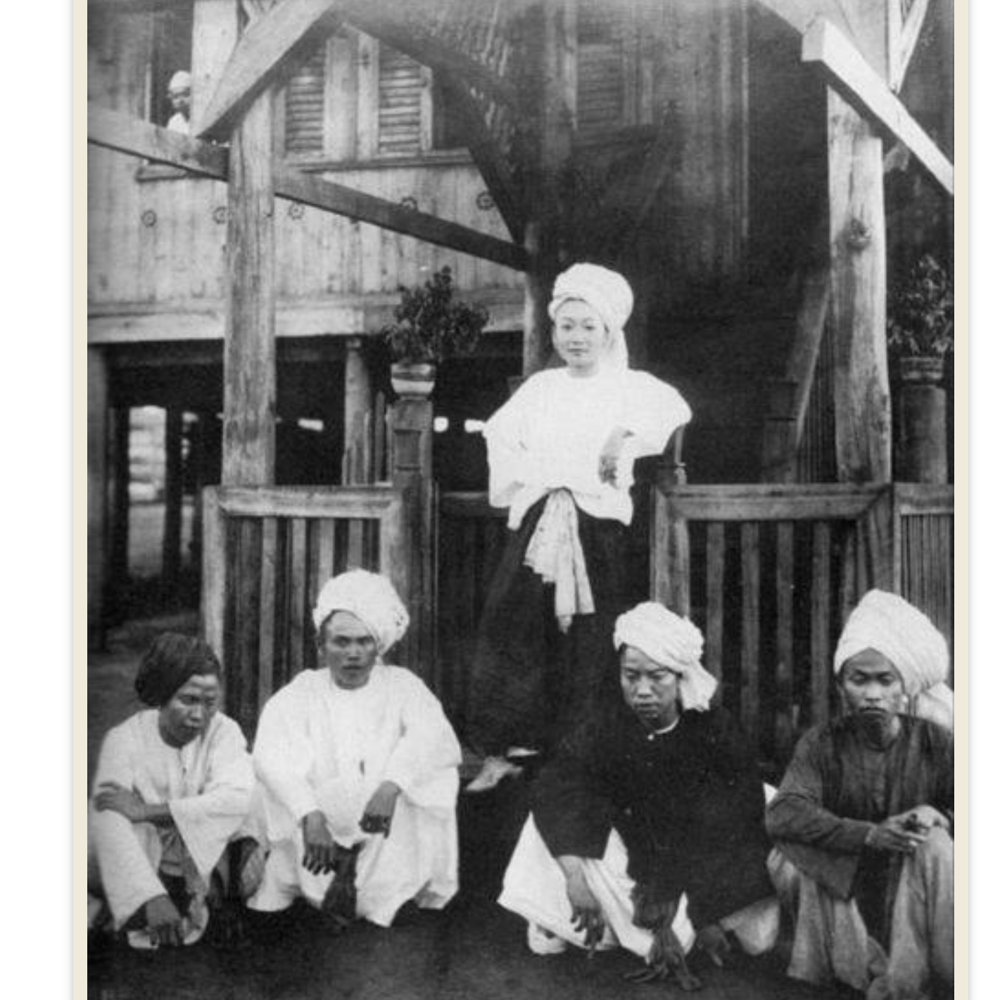
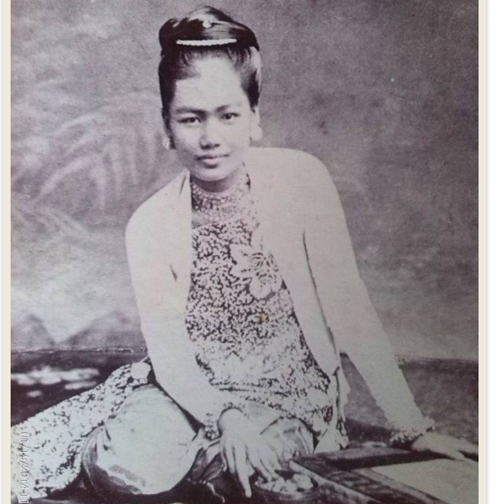

မြန်မာ့သမိုင်းနှင့် ကမ္ဘာ့သမိုင်းကို ရှာဖွေလေ့လာခြင်း
အဓိက ခေတ်ကာလများ အကြောင်း ရှာဖွေရန်

ကျိုင်းတုံ မင်းသမီး ဖတ္ရန္

မင်းတုန်းမင်းကြီး၏ အသည်းကျော်သမီးတော်တစ်ဦးဖြစ်သည့် နောင်မွန်မင်းသမီး သီရိပဒုမာဒေဝီ။ ဖတ္ရန္
တရုတ်တပ်များ မြစ်ကြီးနားသို့ ချဉ်းကပ်လာစဉ် ဖတ္ရန္
သီပေါမင်း၏ စာသင်ကျောင်း
event_note ခေတ်ကာလများပြပုံ
1880s
သီပေါမင်း၏ စာသင်ကျောင်း
သီပေါမင်း ပညာသင်ယူခဲ့သော စာသင်ကျောင်းနှင့် ပတ်သက်၍ ဤပုံကိုသာ တွေ့ရှိထားပါသည်။ မန္တလေး နန်းမြို့ရိုးအနောက်ဘက်တွင် တည်ရှိပြီး ‘ဒေါက်တာမာ့ခ်စ်ကျောင်း’ ‘ဆရာမှတ်ကြီးကျောင်း’ ဟုလည်း လူသိများသည့် အက်စ်ပီဂျီ သာသနာပြု စာသင်ကျောင်းဖြစ်သည်။ ၁၈၆၉ ခုနှစ်တွင် ရန်ကုန် စိန်ဂျွန်းကျောင်း၏ ကျောင်းအုပ်ဆရာကြီး ခရစ်ယာန်သာသနာပြုဘုန်းကြီး ဂျိန်းမ်စ်အက်ဘန်နီဇာမာ့က်စ်(James Ebenezer Marks)အား ခရစ်ယာန်ဘုရားရှိခိုးကျောင်းနှင့် ဆရာများနေရန် နေအိမ်အပါအဝင် စာသင်ကျောင်းတစ်ခု အတူတကွ တည်ထောင်ရန် မင်းတုန်းမင်းကြီး ဖိတ်ကြားခဲ့သည်။ ထိုကျောင်းတွင် သီပေါမင်းသားအပါအဝင် မင်းညီမင်းသား ၇ ဦး ပညာဆည်းပူးခဲ့သည်။ သီပေါမင်းသားကို ခရစ်ကတ်ကစားရာတွင် “ပြိုင်ဘက်မရှိ ထူးချွန်သော” ကစားသမားအဖြစ်၊ ဒိုးလုံးလှိမ့်တမ်း ကစားသည့်အခါ “မင်းသားတစ်ယောက်နှင့် မလိုက်ဖက်သော စကားများ” ပြောဆိုတတ်သည်ဟု အမှတ်ရကြသည်။ သီပေါမင်းသားသည် လိမ္မာရေးခြားသော ကျောင်းသားတစ်ယောက်ဖြစ်ခဲ့ပြီး အင်္ဂလိပ်စာကို ပြောတတ်ဖတ်တတ်နိုင်သော ပထမဦးဆုံးနှင့်နောက်ဆုံး မြန်မာဘုရင်တစ်ယောက်ဖြစ်ခဲ့ကြောင်း မှတ်သားရပေသည်။